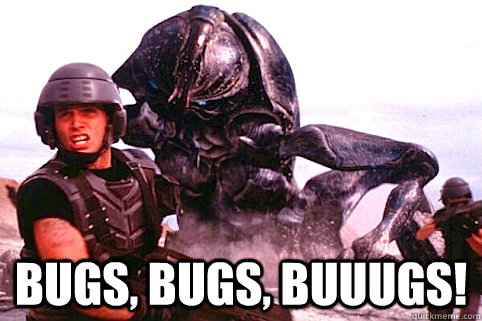
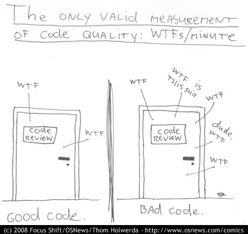

Pragmatisch Git
Wordpress meetup Nijmegen, oktober 2013
| z, ? | toggle help (this) |
| space, → | next slide |
| shift-space, ← | previous slide |
| d | toggle debug mode |
| ## <ret> | go to slide # |
| c, t | table of contents (vi) |
| f | toggle footer |
| r | reload slides |
| n | toggle notes |
| p | run preshow |
| P | toggle pause |
Wordpress meetup Nijmegen, oktober 2013



Een VCS wordt het meest gebruikt bij de ontwikkeling van software, zodat meerdere mensen wijzigingen kunnen aanbrengen aan dezelfde bestanden. Wijzigingen worden meestal aangeduid met een code, het "revisienummer" of "revisieniveau". Elke wijziging wordt gekoppeld aan een timestamp en aan de persoon die de wijziging maakte. Wijzigingen kunnen vergeleken worden, hersteld en soms samengevoegd.


GOTO 20